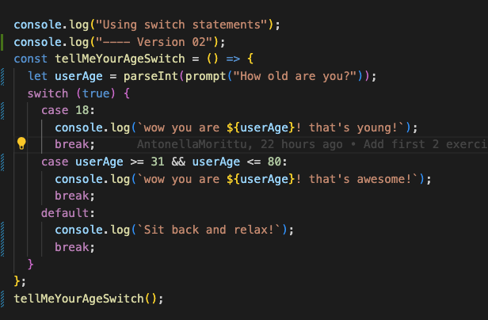

Question:
Will we get a personal page in Notion? Or do we need to create a workspace instead?
by Pernilla
Answer:
No you won't get one. But you can create a free workspace and go crazy there 🤘🏻
Question:
In the lecture yesterday you said that your recommend that we use the basic way of writing functions (ex. function name() {code} )? But in the video "Functions Basics" Jennie is saying that Technigo wants us to use the new ES6 method (ex. const name = () => { code }) when we write functions. Since the information from class and the video is contradicting, can you please clarify this for us? Thanks!
Answer:
Sure thing! The regular function declaration and a function expression have slighlty different use, so it depends on what you need from one of the 2 solutions. For consistency we can try to prefer one method, I believe in the material it's just a suggestion, not an imposition to prefer one or the other. At the end of the day, despite the conventions, coding style is also a personal choice!
Question:
What is a best practice when it comes to converting a string into a number? Number() or parsInt()
by Pernilla
Answer:
When it comes to converting a string into a number in JavaScript, whether to use Number() or parseInt() depends on your specific use case and requirements. Both functions have their own purposes and behave slightly differently, so it's important to choose the one that suits your needs. Here are some guidelines for when to use each function:
Use Number() when: You want to convert a string to a floating-point number (decimal). You need to handle strings with decimal points or scientific notation. You want a more flexible and comprehensive conversion method.
Use parseInt() when you want to convert a string into an integer (whole number). You can also specify the radix (base) as the second argument to parse strings in different number systems (e.g., binary, octal, hexadecimal). It stops parsing at the first non-numeric character, so it's suitable for extracting integers from the beginning of a string. If the string cannot be converted into a valid integer, it returns NaN.
Example: const str = "123.45";
const int = parseInt(str);
console.log(int); // 123
Use parseInt() when you want to convert a string into an integer (whole number). You can also specify the radix (base) as the second argument to parse strings in different number systems (e.g., binary, octal, hexadecimal). It stops parsing at the first non-numeric character, so it's suitable for extracting integers from the beginning of a string. If the string cannot be converted into a valid integer, it returns NaN.
Example: const str = "123.45";
const int = parseInt(str);
console.log(int); // 123
Question:
I can't use logical operators with conjuction in a switch unless I put true inside the paratheses.
Answer:
You use a switch statement with the condition true to evaluate each case based on the value of age. Depending on the age range, it will log different messages to the console. You can replace age with any actual age input you want to use. In this case, it's perfectly fine to use an if statement as we're only checking if one condition is true or false:
if (age >= 18) { do something } else { do something else }
so a switch statement is a case of over-engineering a simple problem with a complex solution.
Question:
In week one examples (class repo) you added an "exit(1);" at the end of the conditional statement (after the "else {}"). There is no "exit();"in the week 2 explanations for the same type of statement. Is it necessary to add an "exit();" or not or can you explain why its added in one and not the other?
Answer:
.exit() is a method, or a tool., that you call when you want to quit the programme and stop running it. It's not necessary or mandatory, you only use it when you need it.
Question:
About creating my first Pull Request (PR)! Could you please simplify the steps from forking a repository to creating the first PR. ⭐️ p.s. here are my steps: 1 - clone 2 - git remote add upstream 3 - create a new branch 4 - push to my branch 5 - create a PR Please confirm if they are correct.
by May
Answer:
You didn't need to open a PR, it's good practice but it wasn't necessary. All of your assignments will need to be accessible from Canvas you only need to push your code and provide a link with the updated final code on your GitHub account.
If you work in pairs - only one of you should fork the repo and after that the other person should clone the the forked repo. If you did a fork of a fork you can merge them by creating a pull request. But this pull request needs to be done to the teammates repository and not to technigos. Once you accomplish that you will be able to compare changes and to merge the pull request. From that point you should be good to go working on a single repository.